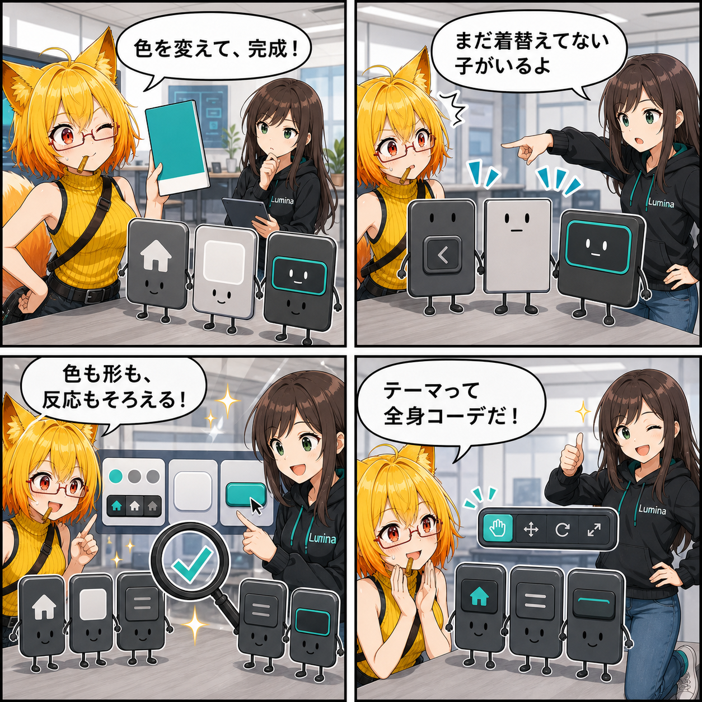

色だけじゃない。アイコンも角丸も、UIテーマを全身調整した日
UIテーマ調整を色だけの変更から一段広げ、アイコン、角丸や枠形状、操作時の見た目まで同じテーマ資産から整えられるようにしました。
main ブランチでは集計期間内に2件のコミットがありました。終了時点のHEADは 4206d9b（編集モードの見切れを修正）、期間全体では58ファイル、1,810行追加、256行削除です。現在のViewer作業ツリーには未コミット差分がありますが、実装日を確定できないため本日の実績には含めていません。集計期間は 2026-08-29 03:00:00 JST から 2026-08-30 02:59:59 JST までです。
アイコンを本文の色から独立して調整
これまでナビゲーションアイコンは、本文の控えめな文字色やアクセント色に寄せて表示される部分がありました。今回、通常・選択・無効のアイコン色をテーマの専用パレットとして持たせ、ナビゲーション用画像の生成と実行時の色付けが同じ設定を参照するようになりました。
文字とアイコンを別々に調整できるため、本文の読みやすさを変えずに、選択中のアイコンだけをはっきり見せるといった調整がしやすくなります。
角丸・枠・操作状態もテーマの一部へ
テーマ調整画面には、文字・背景・状態の色に加えて、アイコン色、角丸・枠形状、操作時の見た目、動き・フェードなどの区分が並ぶようになりました。Inspector上の名称も日本語で整理され、どこを変える設定なのかを追いやすくしています。
角丸画像やナビゲーション画像の割り当てもテーマ資産から扱えるようになり、色だけでなくUI部品の輪郭や反応まで一つのテーマとして調整できる範囲が広がりました。
変更が届いていない場所を監査
テーマ項目を増やすだけでは、実際のUIが古い固定値を使い続けていても気づきにくい問題があります。そこで調整画面にカバレッジ監査を加え、シーン内のUIがテーマの参照へつながっているかを確認できるようにしました。
プレビューと監査を同じ調整画面から行えるため、「設定は変えたのに、この部品だけ見た目が変わらない」という取りこぼしを探しやすくなります。
技術的なポイント
- 通常・選択・無効を分けた専用のアイコン色パレット
- ナビゲーション画像と角丸部品画像をテーマ資産から生成・参照
- 本文・アイコン・背景の実行時カラー変換を分離
- 角丸・枠形状、操作時の見た目、動き・フェードを日本語の区分で整理
- テーマ参照が届いていないUIを探すカバレッジ監査
ほかにも進んだこと
- Desktop Inspectorで編集モード選択欄の分だけ本文領域を確保し、項目の見切れを修正
- Graphite Studioのナビゲーション画像と角丸部品画像をテーマ設定から生成・参照できるよう改善
- UIテーマを実行時へ適用する際、本文・アイコン・背景の色変換を分離
4コマの裏話
今回はUI部品の「衣装合わせ」に見立てました。ろひが配色だけで完成だと思った直後、アイコンや角丸が古い格好のまま並んでいることにルミナが気づきます。最後は色・形・操作時の反応まで揃い、テーマは全身コーデだった、と納得する逆転型です。
まとめ
UIテーマ調整は、配色だけでなくアイコン、角丸や枠形状、操作状態、アニメーション設定まで扱いやすい構成になりました。専用のアイコン色とカバレッジ監査を加え、設定を作るところから実際のUIへ届けるところまで確認しやすくした改善です。
本日のひとこと： テーマは、色替えではなく全身コーデ。